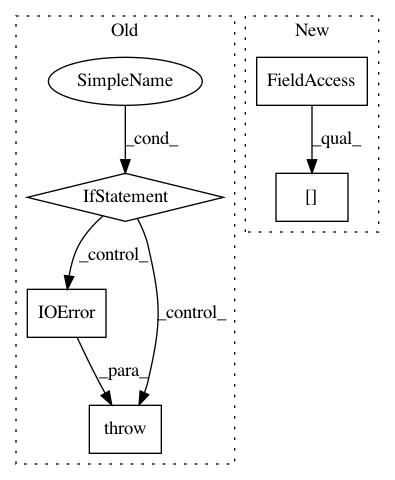

1672b5a9a47b081aa3e61c9f2ca76fae26ed8730,cheml/wrappers/cheml_cml/cheml_wrapper.py,DistanceMatrix,fit,#DistanceMatrix#,221
Before Change
def fit(self):
from cheml.chem import DistanceMatrix
// check inputs
if isinstance(self.legal_inputs["df"], type(None)):
msg = "@Task //%i(%s): input data frame is required"%(self.iblock,self.SuperFunction)
raise IOError(msg)
try:
model = DistanceMatrix(**self.parameters)
except Exception as err:
msg = "@Task //%i(%s): " % (self.iblock + 1, self.SuperFunction) + type(err).__name__ + ": " + err.message
After Change
df = pd.DataFrame(model.transform(ar))
self.set_value(token, df)
self.outputs[token].count = order.count(token)
self.Base.send[(self.iblock, token)] = self.outputs[token]
del self.inputs
// Preprocessor
In pattern: SUPERPATTERN
Frequency: 3
Non-data size: 5
Instances
Project Name: hachmannlab/chemml
Commit Name: 1672b5a9a47b081aa3e61c9f2ca76fae26ed8730
Time: 2017-11-12
Author: mojtabah@buffalo.edu
File Name: cheml/wrappers/cheml_cml/cheml_wrapper.py
Class Name: DistanceMatrix
Method Name: fit
Project Name: has2k1/plotnine
Commit Name: 6c6570140f9b4e115ec6c1fd35047e829020628f
Time: 2014-04-27
Author: pyrios@gmail.com
File Name: ggplot/tests/__init__.py
Class Name:
Method Name:
Project Name: nipy/dipy
Commit Name: be5bfc2ed3657ddf103a1ca91bd7b66190877417
Time: 2020-10-17
Author: skab12@gmail.com
File Name: dipy/io/gradients.py
Class Name:
Method Name: read_bvals_bvecs